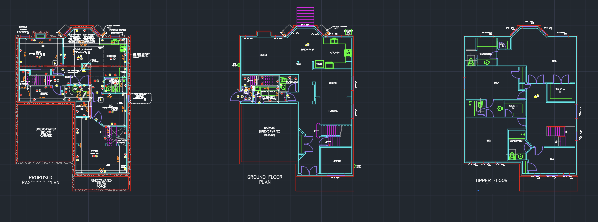
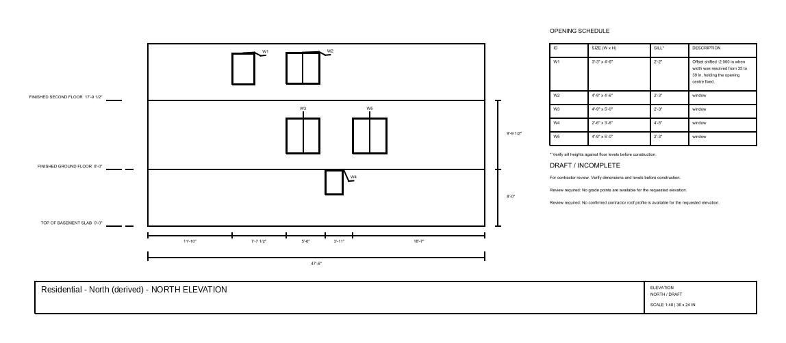
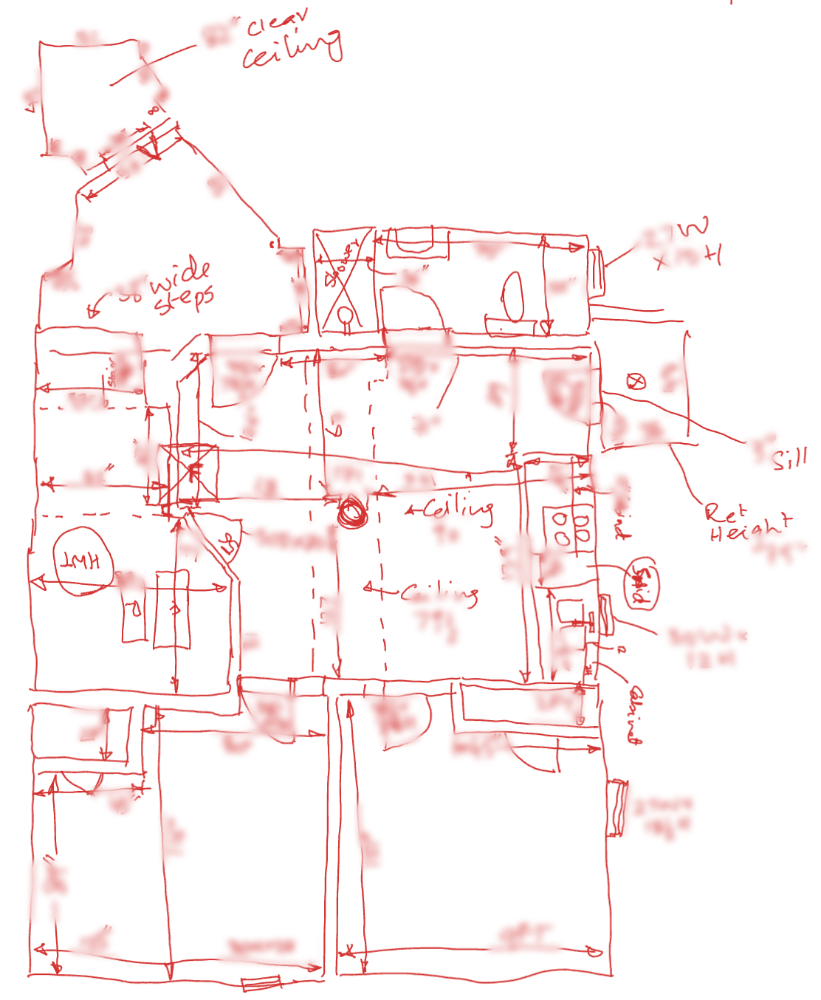

DraftWorks generates dimensioned exterior elevations from existing residential plan sets and, now, from contractors' hand sketches. Below are real project inputs and a generated output, with client details removed.
Input Plan set, three levels, AutoCAD

Output North elevation, generated

Input Contractor hand sketch, new

Some measurements are blurred to protect client privacy.
Wall extents, opening placement, window tagging and schedule, floor datums, and a closed dimension chain, from either a plan set or a contractor's hand sketch.
Vertical geometry comes from known floor-to-floor measurements rather than inference.
3D scans. Taking raw 3D point data from a site scan and turning it into editable drawings for contractors, designers and engineers.
Roof pitch is not recoverable from a 2D plan, so it has to come from the scan rather than a guess.
Inputs disagree with themselves.
The same opening appears at two widths across sheets, and site sketches never match the drawings exactly, so the pipeline has to normalise conflicting measurements into one consistent model before any geometry can be drawn.